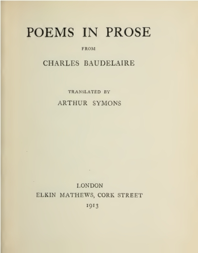

Title: Poems in Prose
Author: Charles Baudelaire
Translator: Arthur Symons
Release date: November 19, 2015 [eBook #50489]
Most recently updated: October 22, 2024
Language: English
Other information and formats: www.gutenberg.org/ebooks/50489
Credits: Produced by Marc D'Hooghe (Images generously made available by the Internet Archive.)

The "Petits Poèmes en Prose" are experiments, and they are also confessions. "Who of us," says Baudelaire in his dedicatory preface, "has not dreamed, in moments of ambition, of the miracle of a poetic prose, musical without rhythm and without rhyme, subtle and staccato enough to follow the lyric motions of the soul, the wavering outlines of meditation, the sudden starts of the conscience?" This miracle he has achieved in these bagatelles laborieuses, to use his own words, these astonishing trifles, in which the art is not more novel, precise and perfect than the quality of thought and of emotion. In translating into English a few of these little masterpieces, which have given me so much delight for so many years, I have tried to be absolutely faithful to the sense, the words, and the rhythm of the original.
A. S.
| I. | The Favours of the Moon | |
| II. | Which is True? | |
| III. | "L'Invitation au Voyage" | |
| IV. | The Eyes of the Poor | |
| V. | Windows | |
| VI. | Crowds | |
| VII. | The Cake | |
| VIII. | Evening Twilight | |
| IX. | "Anywhere out of the World" | |
| X. | A Heroic Death | |
| XI. | Be Drunken | |
| XII. | Epilogue |
The Moon, who is caprice itself, looked in through the window when you lay asleep in your cradle, and said inwardly: "This is a child after my own soul."
And she came softly down the staircase of the clouds, and passed noiselessly through the window-pane. Then she laid herself upon you with the supple tenderness of a mother, and she left her colours upon your face. That is why your eyes are green and your cheeks extraordinarily pale. It was when you looked at her, that your pupils widened so strangely; and she clasped her arms so tenderly about your throat that ever since you have had the longing for tears.
Nevertheless, in the flood of her joy, the Moon filled the room like a phosphoric atmosphere, like a luminous poison; and all this living light thought and said: "My kiss shall be upon you for ever. You shall be beautiful as I am beautiful. You shall love that which I love and that by which I am loved: water and clouds, night and silence; the vast green sea; the formless and multiform water; the place where you shall never be; the lover whom you shall never know; unnatural flowers; odours which make men drunk; the cats that languish upon pianos and sob like women, with hoarse sweet voices!
"And you shall be loved by my lovers, courted by my courtiers. You shall be the queen of men who have green eyes, and whose throats I have clasped by night in my caresses; of those that love the sea, the vast tumultuous green sea, formless and multiform water, the place where they are not, the woman whom they know not, the ominous flowers that are like the censers of an unknown rite, the odours that trouble the will, and the savage and voluptuous beasts that are the emblems of their folly."
And that is why, accursed dear spoilt child, I lie now at your feet, seeking to find in you the image of the fearful goddess, the fateful godmother, the poisonous nurse of all the moonstruck of the world.
I knew one Benedict, who filled earth and air with the ideal; and from whose eyes men learnt the desire of greatness, of beauty, of glory, and of all whereby we believe in immortality.
But this miraculous child was too beautiful to live long; and she died only a few days after I had come to know her, and I buried her with my own hands, one day when Spring shook out her censer in the graveyards. I buried her with my own hands, shut down into a coffin of wood, perfumed and incorruptible like Indian caskets.
And as I still gazed at the place where I had laid away my treasure, I saw all at once a little person singularly like the deceased, who trampled on the fresh soil with a strange and hysterical violence, and said, shrieking with laughter: "Look at me! I am the real Benedicta! a pretty sort of baggage I am! And to punish you for your blindness and folly you shall love me just as I am!"
But I was furious, and I answered: "No! no! no!" And to add more emphasis to my refusal I stamped on the ground so violently with my foot that my leg sank up to the knee in the earth of the new' grave; and now, like a wolf caught in a trap, I remain fastened, perhaps for ever, to the grave of the ideal.
There is a wonderful country, a country of Cockaigne, they say, which I dreamed of visiting with an old friend. It is a strange country, lost in the mists of the North and one might call it the East of the West, the China of Europe, so freely does a warm and capricious fancy flourish there, and so patiently and persistently has that fancy illustrated it with a learned and delicate vegetation.
A real country of Cockaigne, where everything is beautiful, rich, quiet, honest; where order is the likeness and the mirror of luxury; where life is fat, and sweet to breathe; where disorder, tumult, and the unexpected are shut out; where happiness is wedded to silence; where even cooking is poetic, rich and highly flavoured at once; where all, dear love, is made in your image.
You know that feverish sickness which comes over us in our cold miseries, that nostalgia of unknown lands, that anguish of curiosity? There is a country made in your image, where all is beautiful, rich, quiet and honest; where fancy has built and decorated a western China, where life is sweet to breathe, where happiness is wedded to silence. It is there that we should live, it is there that we should die!
Yes, it is there that we should breathe, dream, and lengthen out the hours by the infinity of sensations. A musician has written an "Invitation à la Valse": who will compose the "Invitation au Voyage" that we can offer to the beloved, to the chosen sister?
Yes, it is in this atmosphere that it would be good to live; far off, where slower hours contain more thoughts, where clocks strike happiness with a deeper and more significant solemnity.
On shining panels, or on gilded leather of a dark richness, slumbers the discreet life of pictures, deep, calm, and devout as the souls of the painters who created it. The sunsets which colour so richly the walls of dining-room and drawing-room, are sifted through beautiful hangings or through tall wrought windows leaded into many panes. The pieces of furniture are large, curious, and fantastic, armed with locks and secrets like refined souls. Mirrors, metals, hangings, goldsmith's work and pottery, play for the eyes a mute and mysterious symphony; and from all things, from every corner, from the cracks of drawers and from the folds of hangings, exhales a singular odour, a "forget-me-not" of Sumatra, which is, as it were, the soul of the abode.
A real country of Cockaigne, I assure you, where all is beautiful, clean, and shining, like a clear conscience, like a bright array of kitchen crockery, like splendid jewellery of gold, like many-coloured jewellery of silver! All the treasures of the world have found their way there, as to the house of a hard-working man who has put the whole world in his debt. Singular country, excelling others as Art excels Nature, where Nature is refashioned by dreams, where Nature is corrected, embellished, re-moulded.
Let the alchemists of horticulture seek and seek again, let them set ever further and further back the limits to their happiness! Let them offer prizes of sixty and of a hundred thousand florins to whoever will solve their ambitious problems! For me, I have found my "black tulip" and my "blue dahlia"!
Incomparable flower, recaptured tulip, allegoric dahlia, it is there, is it not, in that beautiful country, so calm and so full of dreams, that you live and flourish? There, would you not be framed within your own analogy, and would you not see yourself again, reflected, as the mystics say, in your own "correspondence"?
Dreams, dreams ever! and the more delicate and ambitious the soul, the further do dreams estrange it from possible things. Every man carries within himself his natural dose of opium, ceaselessly secreted and renewed, and, from birth to death, how many hours can we reckon of positive pleasure, of successful and decided action? Shall we ever live in, shall we ever pass into, that picture which my mind has painted, that picture made in your image?
These treasures, this furniture, this luxury, this order, these odours, these miraculous flowers, are you. You too are the great rivers and the quiet canals. The vast ships that drift down them, laden with riches, from whose decks comes the sound of the monotonous songs of labouring sailors, are my thoughts which slumber or rise and fall on your breast. You lead them softly towards the sea, which is the infinite, mirroring the depths of the sky in the crystal clearness of your soul; and when, weary of the surge and heavy with the spoils of the East, they return to the port of their birth, it is still my thoughts that come back enriched out of the infinite to you.
Ah! you want to know why I hate you to-day It will probably be less easy for you to understand than for me to explain it to you; for you are, I think, the most perfect example of feminine impenetrability that could possibly be found.
We had spent a long day together, and it had seemed to me short. We had promised one another that we would think the same thoughts and that our two souls should become one soul; a dream which is not original, after all, except that, dreamed by all men, it has been realised by none.
In the evening you were a little tired, and you sat down outside a new café at the corner of a new boulevard, still littered with plaster and already displaying proudly its unfinished splendours. The café glittered. The very gas put on all the fervency of a fresh start, and lighted up with its full force the blinding whiteness of the walls, the dazzling sheets of glass in the mirrors, the gilt of cornices and mouldings, the chubby-cheeked pages straining back from hounds in leash, the ladies laughing at the falcons on their wrists, the nymphs and goddesses carrying fruits and pies and game on their heads, the Hebes and Ganymedes holding out at arm's-length little jars of syrups or parti-coloured obelisks of ices; the whole of history and of mythology brought together to make a paradise for gluttons. Exactly opposite to us, in the roadway, stood a man of about forty years of age, with a weary face and a greyish beard, holding a little boy by one hand and carrying on the other arm a little fellow too weak to walk. He was taking the nurse-maid's place, and had brought his children out for a walk in the evening. All were in rags. The three faces were extraordinarily serious, and the six eyes stared fixedly at the new café with an equal admiration, differentiated in each according to age.
The father's eyes said: "How beautiful it is! how beautiful it is! One would think that all the gold of the poor world had found its way to these walls." The boy's eyes said: "How beautiful it is! how beautiful it is! But that is a house which only people who are not like us can enter." As for the little one's eyes, they were too fascinated to express anything but stupid and utter joy.
Song-writers say that pleasure ennobles the soul and softens the heart. The song was right that evening, so far as I was concerned. Not only was I touched by this family of eyes, but I felt rather ashamed of our glasses and decanters, so much too much for our thirst. I turned to look at you, dear love, that I might read my own thought in you; I gazed deep into your eyes, so beautiful and so strangely sweet, your green eyes that are the home of caprice and under the sovereignty of the Moon; and you said to me: "Those people are insupportable to me with their staring saucer-eyes! Couldn't you tell the head waiter to send them away?"
So hard is it to understand one another, dearest, and so incommunicable is thought, even between people who are in love!
He who looks in through an open window never sees so many things as he who looks at a shut window. There is nothing more profound, more mysterious, more fertile, more gloomy, or more dazzling, than a window lighted by a candle. What we can see in the sunlight is always less interesting than what goes on behind the panes of a window. In that dark or luminous hollow, life lives, life dreams, life suffers.
Across the waves of roofs, I can see a woman of middle age, wrinkled, poor, who is always leaning over something, and who never goes out. Out of her face, out of her dress, out of her attitude, out of nothing almost, I have made up the woman's story, and sometimes I say it over to myself with tears.
If it had been a poor old man, I could have made up his just as easily.
And I go to bed, proud of having lived and suffered in others.
Perhaps you will say to me: "Are you sure that it is the real story?" What does it matter, what does any reality outside of myself matter, if it has helped me to live, to feel that I am, and what I am?
It is not given to every man to take a bath of multitude: to play upon crowds is an art; and he alone can plunge, at the expense of humankind, into a debauch of vitality, to whom a fairy has bequeathed in his cradle the love of masks and disguises, the hate of home and the passion of travel.
Multitude, solitude: equal terms mutually convertible by the active and begetting poet. He who does not know how to people his solitude, does not know either how to be alone in a busy crowd.
The poet enjoys this incomparable privilege, to be at once himself and others. Like those wandering souls that go about seeking bodies, he enters at will the personality of every man. For him alone, every place is vacant; and if certain places seem to be closed against him, that is because in his eyes they are not worth the trouble of visiting.
The solitary and thoughtful walker derives a singular intoxication from this universal communion. He who mates easily with the crowd knows feverish joys that must be for ever unknown to the egoist, shut up like a coffer, and to the sluggard, imprisoned like a shell-fish. He adopts for his own all the occupations, all the joys and all the sorrows that circumstance sets before him.
What men call love is small indeed, narrow and weak indeed, compared with this ineffable orgie, this sacred prostitution of the soul which gives itself up wholly (poetry and charity!) to the unexpected which happens, to the stranger as he passes.
It is good sometimes that the happy of this world should learn, were it only to humble their foolish pride for an instant, that there are higher, wider, and rarer joys than theirs. The founders of colonies, the shepherds of nations, the missionary priests, exiled to the ends of the earth, doubtless know something of these mysterious intoxications; and, in the midst of the vast family that their genius has raised about them, they must sometimes laugh at the thought of those who pity them for their chaste lives and troubled fortunes.
I was travelling. The landscape in the midst of which I was seated was of an irresistible grandeur and sublimity. Something no doubt at that moment passed from it into my soul. My thoughts fluttered with a lightness like that of the atmosphere; vulgar passions, such as hate and profane love, seemed to me now as far away as the clouds that floated in the gulfs beneath my feet; my soul seemed to me as vast and pure as the dome of the sky that enveloped me; the remembrance of earthly things came as faintly to my heart as the thin tinkle of the bells of unseen herds, browsing far, far away, on the slope of another mountain. Across the little motionless lake, black with the darkness of its immense depth, there passed from time to time the shadow of a cloud, like the shadow of an airy giant's cloak, flying through heaven. And I remember that this rare and solemn sensation, caused by a vast and perfectly silent movement, filled me with mingled joy and fear. In a word, thanks to the enrapturing beauty about me, I felt that I was at perfect peace with myself and with the universe; I even believe that, in my complete forgetfulness of all earthly evil, I had come to think the newspapers are right after all, and man was born good; when, incorrigible matter renewing its exigences, I sought to refresh the fatigue and satisfy the appetite caused by so lengthy a climb. I took from my pocket a large piece of bread, a leathern cup, and a small bottle of a certain elixir which the chemists at that time sold to tourists, to be mixed, on occasion, with liquid snow.
I was quietly cutting my bread when a slight noise made me look up. I saw in front of me a little ragged urchin, dark and dishevelled, whose hollow eyes, wild and supplicating, devoured the piece of bread. And I heard him gasp, in a low, hoarse voice, the word: "Cake!" I could not help laughing at the appellation with which he thought fit to honour my nearly white bread, and I cut off a big slice and offered it to him. Slowly he came up to me, not taking his eyes from the coveted object; then, snatching it out of my hand, he stepped quickly back, as if he feared that my offer was not sincere, or that I had already repented of it.
But at the same instant he was knocked over by another little savage, who had sprung from I know not where, and who was so precisely like the first that one might have taken them for twin brothers. They rolled over on the ground together, struggling for the possession of the precious booty, neither willing to share it with his brother. The first, exasperated, clutched the second by the hair; and the second seized one of the ears of the first between his teeth, and spat out a little bleeding morsel with a fine oath in dialect. The legitimate proprietor of the cake tried to hook his little claws into the usurper's eyes; the latter did his best to throttle his adversary with one hand, while with the other he endeavoured to slip the prize of war into his pocket. But, heartened by despair, the loser pulled himself together, and sent the victor sprawling with a blow of the head in his stomach. Why describe a hideous fight which indeed lasted longer than their childish strength seemed to promise? The cake travelled from hand to hand, and changed from pocket to pocket, at every moment but, alas, it changed also in size; and when at length, exhausted, panting and bleeding, they stopped from the sheer impossibility of going on, there was no longer any cause of feud; the slice of bread had disappeared, and lay scattered in crumbs like the grains of sand with which it was mingled.
The sight had darkened the landscape for me, and dispelled the joyous calm in which my soul had lain basking; I remained saddened for quite a long time, saying over and over to myself: "There is then a wonderful country in which bread is called cake, and is so rare a delicacy that it is enough in itself to give rise to a war literally fratricidal!"
The day is over. A great restfulness descends into poor minds that the day's work has wearied; and thoughts take on the tender and dim colours of twilight.
Nevertheless from the mountain peak there comes to my balcony, through the transparent clouds of evening, a great clamour, made up of a crowd of discordant cries, dulled by distance into a mournful harmony, like that of the rising tide or of a storm brewing.
Who are the hapless ones to whom evening brings no calm; to whom, as to the owls, the coming of night is the signal for a witches' sabbath? The sinister ululation comes to me from the hospital on the mountain; and, in the evening, as I smoke, and look down on the quiet of the immense valley, bristling with houses, each of whose windows seems to say, "Here is peace, here is domestic happiness!" I can, when the wind blows from the heights, lull my astonished thought with this imitation of the harmonies of hell.
Twilight excites madmen. I remember I had two friends whom twilight made quite ill. One of them lost all sense of social and friendly amenities, and flew at the first-comer like a savage. I have seen him throw at the waiter's head an excellent chicken, in which he imagined he had discovered some insulting hieroglyph. Evening, harbinger of profound delights, spoilt for him the most succulent things.
The other, a prey to disappointed ambition, turned gradually, as the daylight dwindled, sourer, more gloomy, more nettlesome. Indulgent and sociable during the day, he was pitiless in the evening; and it was not only on others, but on himself, that he vented the rage of his twilight mania.
The former died mad, unable to recognise his wife and child; the latter still keeps the restlessness of a perpetual disquietude; and, if all the honours that republics and princes can confer were heaped upon him, I believe that the twilight would still quicken in him the burning envy of imaginary distinctions. Night, which put its own darkness into their minds, brings light to mine; and, though it is by no means rare for the same cause to bring about opposite results, I am always as it were perplexed and alarmed by it.
O night! O refreshing dark! for me you are the summons to an inner feast, you are the deliverer from anguish! In the solitude of the plains, in the stony labyrinths of a city, scintillation of stars, outburst of gas-lamps, you are the fireworks of the goddess Liberty!
Twilight, how gentle you are and how tender! The rosy lights that still linger on the horizon, like the last agony of day under the conquering might of its night; the flaring candle-flames that stain with dull red the last glories of the sunset; the heavy draperies that an invisible hand draws out of the depths of the East, mimic all those complex feelings that war on one another in the heart of man at the solemn moments of life.
Would you not say that it was one of those strange costumes worn by dancers, in which the tempered splendours of a shining skirt show through a dark and transparent gauze, as, through the darkness of the present, pierces the delicious past? And the wavering stars of gold and silver with which it is shot, are they not those fires of fancy which take light never so well as under the deep mourning of the night?
Life is a hospital, in which every patient is possessed by the desire of changing his bed. One would prefer to suffer near the fire, and another is certain that he would get well if he were by the window.
It seems to me that I should always be happy if I were somewhere else, and this question of moving house is one that I am continually talking over with my soul.
"Tell me, my soul, poor chilly soul, what do you say to living in Lisbon? It must be very warm there, and you would bask merrily, like a lizard. It is by the sea; they say that it is built of marble, and that the people have such a horror of vegetation that they tear up all the trees. There is a country after your own soul; a country made up of light and mineral, and with liquid to reflect them."
My soul makes no answer.
"Since you love rest, and to see moving things, will you come and live in that heavenly land, Holland? Perhaps you would be happy in a country which you have so often admired in pictures. What do you say to Rotterdam, you who love forests of masts, and ships anchored at the doors of houses?"
My soul remains silent.
"Or perhaps Java seems to you more attractive? Well, there we shall find the mind of Europe married to tropical beauty."
Not a word. Can my soul be dead?
"Have you sunk then into so deep a stupor that only your own pain gives you pleasure? If that be so, let us go to the lands that are made in the likeness of Death. I know exactly the place for us, poor soul! We will book our passage to Torneo. We will go still further, to the last limits of the Baltic; and, if it be possible, further still from life; we will make our abode at the Pole. There the sun only grazes the earth, and the slow alternations of light and night put out variety and bring in the half of nothingness, monotony. There we can take great baths of darkness, while, from time to time, for our pleasure, the Aurora Borealis shall scatter its rosy sheaves before us, like reflections of fireworks in hell!"
At last my soul bursts into speech, and wisely she cries to me: "Anywhere, anywhere, out of the world!"
Fancioulle was an admirable buffoon, and almost one of the friends of the Prince. But for persons professionally devoted to the comic, serious things have a fatal attraction, and, strange as it may seem that ideas of patriotism and liberty should seize despotically upon the brain of a player, one day Fancioulle joined in a conspiracy formed by some, discontented nobles.
There exist everywhere sensible men to denounce those individuals of atrabiliar disposition who seek to depose princes, and, without consulting it, to reconstitute society. The lords in question were arrested, together with Fancioulle, and condemned to death.
I would readily believe that the Prince was almost sorry to find his favourite actor among the rebels. The Prince was neither better nor worse than any other prince; but an excessive sensibility rendered him, in many cases, more cruel and more despotic than all his fellows. Passionately enamoured of the fine arts, an excellent connoisseur as well, he was truly insatiable of pleasures. Indifferent enough in regard to men and morals, himself a real artist, he feared no enemy but Ennui, and the extravagant efforts that he made to fly or to vanquish this tyrant of the world would certainly have brought upon him, on the part of a severe historian, the epithet of "monster," had it been permitted, in his dominions, to write anything whatever which did not tend exclusively to pleasure, or to astonishment, which is one of the most delicate forms of pleasure. The great misfortune of the Prince was that he had no theatre vast enough for his genius. There are young Neros who are stifled within too narrow limits, and whose names and whose intentions will never be known to future ages. An unforeseeing Providence had given to this man faculties greater than his dominions.
Suddenly the rumour spread that the sovereign had decided to pardon all the conspirators; and the origin of this rumour was the announcement of a special performance in which Fancioulle would play one of his best rôles, and at which even the condemned nobles, it was said, were to be present, an evident sign, added superficial minds, of the generous tendencies of the Prince.
On the part of a man so naturally and deliberately eccentric, anything was possible, even virtue, even mercy, especially if he could hope to find in it unexpected pleasures. But to those who, like myself, had succeeded in penetrating further into the depths of this sick and curious soul, it was infinitely more probable that the Prince was wishful to estimate the quality of the scenic talents of a man condemned to death. He would profit by the occasion to obtain a physiological experience of a capital interest, and to verify to what extent the habitual faculties of an artist would be altered or modified by the extraordinary situation in which he found himself. Beyond this, did there exist in his mind an intention, more or less defined, of mercy? It is a point that has never been solved.
At last, the great day having come, the little court displayed all its pomps, and it would be difficult to realise, without having seen it, what splendour the privileged classes of a little state with limited resources can show forth, on a really solemn occasion. This was a doubly solemn one, both from the wonder of its display and from the mysterious moral interest attaching to it.
The Sieur Fancioulle excelled especially in parts either silent or little burdened with words, such as are often the principal ones in those fairy plays whose object is to represent symbolically the mystery of life. He came upon the stage lightly and with a perfect ease, which in itself lent some support, in the minds of the noble public, to the idea of kindness and forgiveness.
When we say of an actor, "This is a good actor," we make use of a formula which implies that under the personage we can still distinguish the actor, that is to say, art, effort, will. Now, if an actor should succeed in being, in relation to the personage whom he is appointed to express, precisely what the finest statues of antiquity, miraculously animated, living, walking, seeing, would be in relation to the confused general idea of beauty, this would be, undoubtedly, a singular and unheard of case. Fancioulle was, that evening, a perfect idealisation, which it was impossible not to suppose living, possible, real. The buffoon came and went, he laughed, wept, was convulsed, with an indestructible aureole about his head, an aureole invisible to all, but visible to me, and in which were blended, in a strange amalgam, the rays of Art and the martyr's glory. Fancioulle brought, by I know not what special grace, something divine and supernatural into even the most extravagant buffooneries. My pen trembles, and the tears of an emotion which I cannot forget rise to my eyes, as I try to describe to you this never-to-be-forgotten evening. Fancioulle proved to me, in a peremptory, an irrefutable way, that the intoxication of Art is surer than all others to veil the terrors of the gulf; that genius can act a comedy on the threshold of the grave with a joy that hinders it from seeing the grave, lost, as it is, in a Paradise shutting out all thought of the grave and of destruction.
The whole audience, blasé and frivolous as it was, soon fell under the all-powerful sway of the artist. Not a thought was left of death, of mourning, or of punishment. All gave themselves up, without disquietude, to the manifold delights caused by the sight of a masterpiece of living art. Explosions of joy and admiration again and again shook the dome of the edifice with the energy of a continuous thunder. The Prince himself, in an ecstasy, joined in the applause of his court.
Nevertheless, to a discerning eye, his emotion was not unmixed. Did he feel himself conquered in his power as despot? humiliated in his art as the striker of terror into hearts, of chill into souls? Such suppositions, not exactly justified, but not absolutely unjustifiable, passed through my mind as I contemplated the face of the Prince, on which a new pallor gradually overspread its habitual paleness, as snow overspreads snow. His lips compressed themselves tighter and tighter, and his eyes lighted up with an inner fire like that of jealousy or of spite, even while he applauded the talents of his old friend, the strange buffoon, who played the buffoon so well in the face of death. At a certain moment, I saw his Highness lean towards a little page, stationed behind him, and whisper in his ear. The roguish face of the pretty child lit up with a smile, and he briskly quitted the Prince's box as if to execute some urgent commission.
A few minutes later a shrill and prolonged hiss interrupted Fancioulle in one of his finest moments, and rent alike every ear and heart. And from the part of the house from whence this unexpected note of disapproval had sounded, a child darted into a corridor with stifled laughter.
Fancioulle, shaken, roused out of his dream, closed his eyes, then re-opened them, almost at once, extraordinarily wide, opened his mouth as if to breathe convulsively, staggered a little forward, a little backward, and then fell stark dead on the boards.
Had the hiss, swift as a sword, really frustrated the hangman? Had the Prince himself divined all the homicidal efficacy of his ruse? It is permitted to doubt it. Did he regret his dear and inimitable Fancioulle? It is sweet and legitimate to believe it.
The guilty nobles had enjoyed the performance of comedy for the last time. They were effaced from life.
Since then, many mimes, justly appreciated in different countries, have played before the court of ——; but none of them have ever been able to recall the marvellous talents of Fancioulle, or to rise to the same favour.
Be always drunken. Nothing else matters: that is the only question. If you would not feel the horrible burden of Time weighing on your shoulders and crushing you to the earth, be drunken continually.
Drunken with what? With wine, with poetry, or with virtue, as you will. But be drunken.
And it sometimes, on the stairs of a palace, or on the green side of a ditch, or in the dreary solitude of your own room, you should awaken and the drunkenness be half or wholly slipped away from you, ask of the wind, or of the wave, or of the star, or of the bird, or of the clock, of whatever flies, or sighs, or rocks, or sings, or speaks, ask what hour it is; and the wind, wave, star, bird, clock, will answer you: "It is the hour to be drunken! Be drunken, if you would not be martyred slaves of Time; be drunken continually! With wine, with poetry, or with virtue, as you will."
With heart at rest I climbed the citadel's
Steep height, and saw the city as from a tower,
Hospital, brothel, prison, and such hells,
Where evil comes up softly like a flower.
Thou knowest, O Satan, patron of my pain,
Not for vain tears I went up at that hour;
But, like an old sad faithful lecher, fain
To drink delight of that enormous trull
Whose hellish beauty makes me young again.
Whether thou sleep, with heavy vapours full,
Sodden with day, or, new apparelled, stand
In gold-laced veils of evening beautiful,
I love thee, infamous city! Harlots and
Hunted have pleasures of their own to give,
The vulgar herd can never understand.